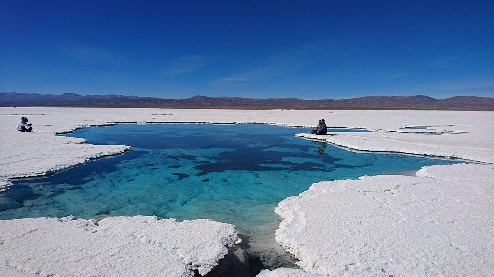

Salinas Grandes

El tercer salar más grande de Sudamérica, un paisaje blanco infinito en la Puna.
Un viaje inolvidable por la Quebrada, la Puna, los Valles y las Yungas.
Empezá tu aventura
El tercer salar más grande de Sudamérica, un paisaje blanco infinito en la Puna.

El majestuoso cerro de los 14 colores a más de 4300 metros sobre el nivel del mar.

Adentrate en la selva de las Yungas, hogar del yaguareté y una biodiversidad única.
Destinos Increíbles
Visitantes Felices
Agencias Asociadas